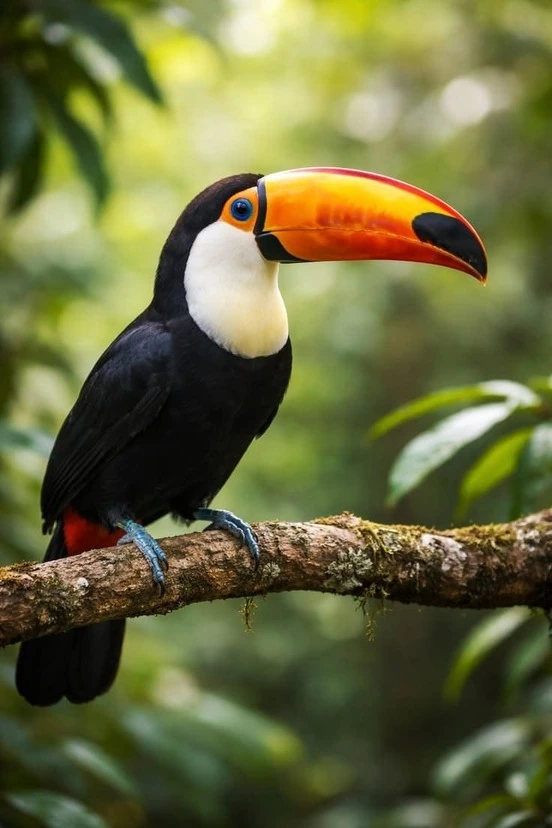
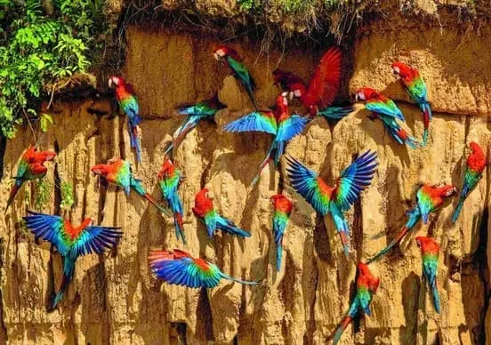
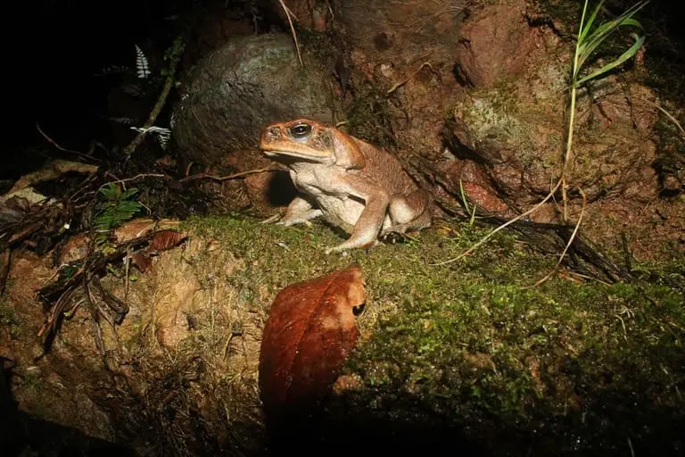
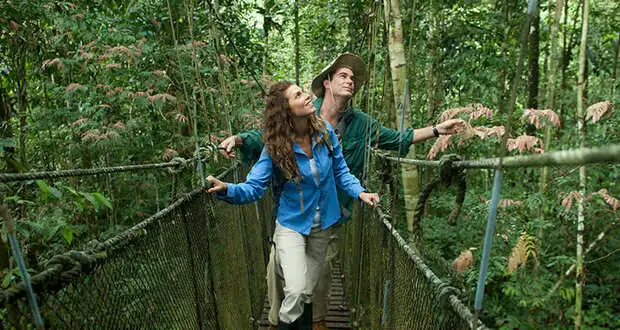
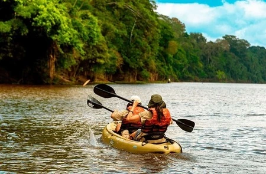
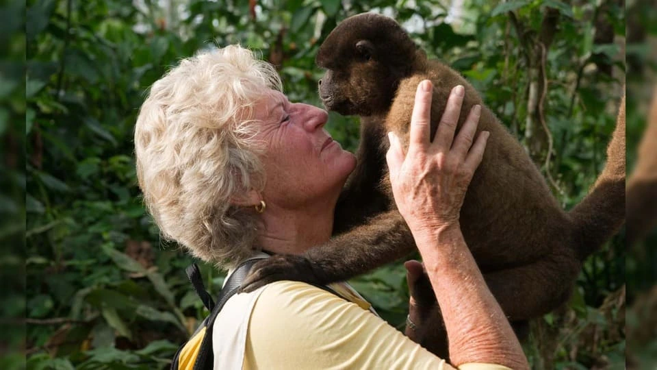
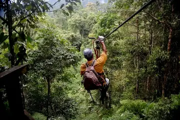
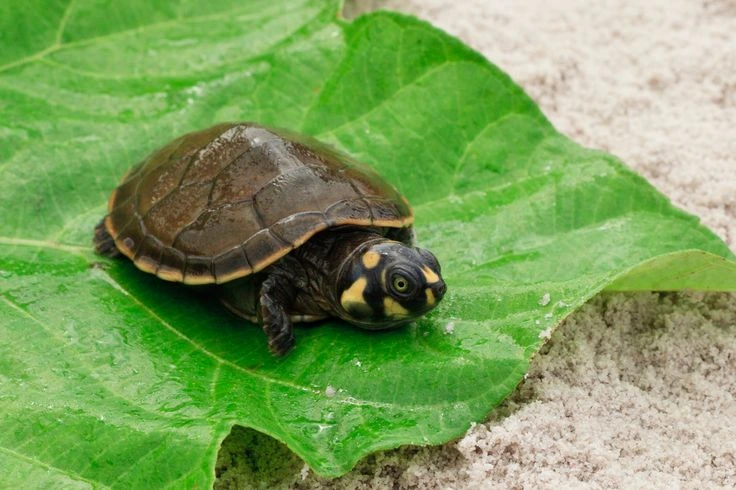
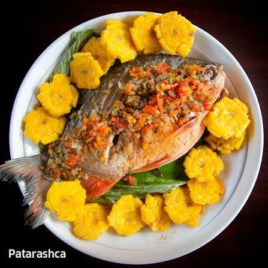
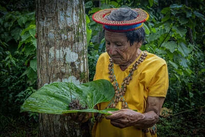

What can you find here?

Wildlife and Bird Watching
Spot pink river dolphins, giant otters, sloths, and hundreds of bird species in reserves like Pacaya-Samiria National Reserve and Tambopata.

Macaw Clay Lick Visits
Watch hundreds of colorful parrots and macaws gather at mineral-rich river cliffs, especially around Tambopata or Manu.

Night Safari Walks
Explore the dark jungle with a guide to see tarantulas, caimans, tree frogs, and bioluminescent fungi.

Canopy Walkways
Walk across high suspension bridges to view the rainforest from the treetops.

River Cruises and Canoeing
Take boat rides or kayak along the Amazon River and its tributaries to explore oxbow lakes and spot aquatic life.

Isla de los Monos
A dedicated rescue and rehabilitation island near Iquitos where visitors can interact with free-roaming, mischievous monkey species.

Adventure Sports
Enjoy piranha fishing, kayaking, canoeing, and jungle zip-lining.

Taricaya Turtle Release
An eco-tourism activity where travelers help conservationists artificial-nest hatch and release vulnerable baby side-necked turtles back into river tributaries.

Cooking Traditional Cuisine
Culinary workshops teaching travelers how to prepare Patarascha (seasoned fresh fish wrapped in bijao leaves and grilled over open firewood coals).

Shamanic & Ethnobotanical Hikes
Deep-woods walks led by indigenous healers to catalog wild jungle flora used for centuries to cure snakebites, fevers, and infections.